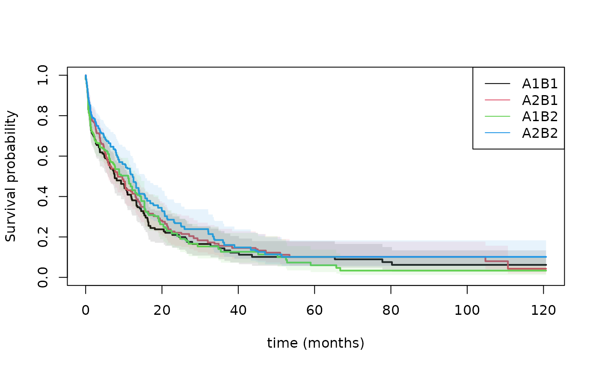

Two-Stage Randomization for for Competing risks and Survival outcomes
Klaus Holst & Thomas Scheike
2025-11-05
Source:vignettes/binreg-TRS.Rmd
binreg-TRS.RmdTwo-Stage Randomization for for Competing risks and Survival outcomes
Under two-stage randomization we can estimate the average treatment effect of treatment regime .
- treatment A0=i and
- for all responses, randomization A1 = (k_1), so treatment k_1
- response*A1 = (k_1, k_2), so treatment k_1 if response 1, and treatment k_2 if response 2.
The estimator can be agumented in different ways: using the two randomizations and the dynamic censoring augmentatation.
Estimating , restricted mean or years lost using IPCW weighted estimating equations : \
The solved estimating eqution is using the covariates from augmentR0 to augment with and using the covariates from augmentR1 to augment with and censoring augmenting with where is chosen to minimize the variance given the dynamic covariates specified by augmentC.
- The treatment’s must be given as factors.
- Treatment for 2nd randomization may depend on response.
- Treatment probabilities are estimated by default and uncertainty from this adjusted for.
- Randomization augmentation for 1’st and 2’nd randomization possible.
- Censoring model possibly stratified on observed covariates (at time 0).
- Censoring augmentation done dynamically over time with time-dependent covariates.
Standard errors are estimated using the influence function of all estimators and tests of differences can therefore be computed subsequently.
Data must be given on start,stop,status survival format with
- one code of status indicating response, that is 2nd randomization
- other codes defines the outcome of interest
library(mets)
set.seed(100)
n <- 200
ddf <- mets:::gsim(n,covs=1,null=0,cens=1,ce=1,betac=c(0.3,1))
true <- apply(ddf$TTt<2,2,mean)
true
#> [1] 0.740 0.715 0.340 0.350
datat <- ddf$datat
## set-random response on data, only relevant after status==2
response <- rbinom(n,1,0.5)
datat$response <- as.factor(response[datat$id]*datat$Count2)
datat$A000 <- as.factor(1)
datat$A111 <- as.factor(1)
bb <- binregTSR(Event(entry,time,status)~+1+cluster(id),datat,time=2,cause=c(1),response.code=2,
treat.model0=A0.f~+1, treat.model1=A1.f~A0.f,
augmentR1=~X11+X12+TR, augmentR0=~X01+X02,
augmentC=~X01+X02+A11t+A12t+X11+X12+TR, cens.model=~strata(A0.f))
bb
#> Simple estimator :
#> coef
#> A0.f=1, response*A1.f=1 0.5723748 0.19721139
#> A0.f=1, response*A1.f=2 0.7354573 0.08755875
#> A0.f=2, response*A1.f=1 0.2834829 0.10028201
#> A0.f=2, response*A1.f=2 0.4790373 0.10007200
#>
#> First Randomization Augmentation :
#> coef
#> A0.f=1, response*A1.f=1 0.5900338 0.21419118
#> A0.f=1, response*A1.f=2 0.7428143 0.08889887
#> A0.f=2, response*A1.f=1 0.2721992 0.10288280
#> A0.f=2, response*A1.f=2 0.4671886 0.10273188
#>
#> Second Randomization Augmentation :
#> coef
#> A0.f=1, response*A1.f=1 0.5564110 0.24533756
#> A0.f=1, response*A1.f=2 0.7185240 0.09841671
#> A0.f=2, response*A1.f=1 0.2778309 0.09021056
#> A0.f=2, response*A1.f=2 0.4685339 0.09839184
#>
#> 1st and 2nd Randomization Augmentation :
#> coef
#> A0.f=1, response*A1.f=1 0.5981472 0.26485855
#> A0.f=1, response*A1.f=2 0.7302633 0.10170090
#> A0.f=2, response*A1.f=1 0.2699247 0.09093482
#> A0.f=2, response*A1.f=2 0.4620365 0.09859532
estimate(coef=bb$riskG$riskG01[,1],vcov=crossprod(bb$riskG.iid$riskG01))
#> Estimate Std.Err 2.5% 97.5% P-value
#> A0.f=1, response*A1.f=1 0.5981 0.26486 0.07903 1.1173 2.392e-02
#> A0.f=1, response*A1.f=2 0.7303 0.10170 0.53093 0.9296 6.946e-13
#> A0.f=2, response*A1.f=1 0.2699 0.09093 0.09170 0.4482 2.994e-03
#> A0.f=2, response*A1.f=2 0.4620 0.09860 0.26879 0.6553 2.783e-06
estimate(coef=bb$riskG$riskG01[,1],vcov=crossprod(bb$riskG.iid$riskG01),f=function(p) c(p[1]/p[2],p[3]/p[4]))
#> Estimate Std.Err 2.5% 97.5% P-value
#> A0.f=1, response*A1.f=1 0.8191 0.3600 0.1135 1.525 0.022884
#> A0.f=2, response*A1.f=1 0.5842 0.2249 0.1433 1.025 0.009399
estimate(coef=bb$riskG$riskG01[,1],vcov=crossprod(bb$riskG.iid$riskG01),f=function(p) c(p[1]-p[2],p[3]-p[4]))
#> Estimate Std.Err 2.5% 97.5% P-value
#> A0.f=1, response*A1.f=1 -0.1321 0.266 -0.6534 0.38920 0.6194
#> A0.f=2, response*A1.f=1 -0.1921 0.129 -0.4450 0.06076 0.1365
## 2 levels for each response , fixed weights
datat$response.f <- as.factor(datat$response)
bb <- binregTSR(Event(entry,time,status)~+1+cluster(id),datat,time=2,cause=c(1),response.code=2,
treat.model0=A0.f~+1, treat.model1=A1.f~A0.f*response.f,
augmentR0=~X01+X02, augmentR1=~X11+X12,
augmentC=~X01+X02+A11t+A12t+X11+X12+TR, cens.model=~strata(A0.f),
estpr=c(0,0),pi0=0.5,pi1=0.5)
bb
#> Simple estimator :
#> coef
#> A0.f=1, response.f*A1.f=1,1 0.5195752 0.18171540
#> A0.f=1, response.f*A1.f=2,1 0.5264182 0.18212146
#> A0.f=1, response.f*A1.f=1,2 0.6343225 0.09083112
#> A0.f=1, response.f*A1.f=2,2 0.6411655 0.08810024
#> A0.f=2, response.f*A1.f=1,1 0.3023142 0.11081204
#> A0.f=2, response.f*A1.f=2,1 0.3199096 0.09719853
#> A0.f=2, response.f*A1.f=1,2 0.5294417 0.13399244
#> A0.f=2, response.f*A1.f=2,2 0.5470372 0.13251846
#>
#> First Randomization Augmentation :
#> coef
#> A0.f=1, response.f*A1.f=1,1 0.6359737 0.21658343
#> A0.f=1, response.f*A1.f=2,1 0.6425345 0.21728891
#> A0.f=1, response.f*A1.f=1,2 0.7129831 0.06901176
#> A0.f=1, response.f*A1.f=2,2 0.7195438 0.06513763
#> A0.f=2, response.f*A1.f=1,1 0.2561355 0.12249210
#> A0.f=2, response.f*A1.f=2,1 0.2790365 0.10488801
#> A0.f=2, response.f*A1.f=1,2 0.4557345 0.14361723
#> A0.f=2, response.f*A1.f=2,2 0.4786356 0.14226926
#>
#> Second Randomization Augmentation :
#> coef
#> A0.f=1, response.f*A1.f=1,1 0.4046498 0.19742912
#> A0.f=1, response.f*A1.f=2,1 0.5687969 0.23376677
#> A0.f=1, response.f*A1.f=1,2 0.5910450 0.09523643
#> A0.f=1, response.f*A1.f=2,2 0.6498579 0.08872953
#> A0.f=2, response.f*A1.f=1,1 0.3039991 0.10638060
#> A0.f=2, response.f*A1.f=2,1 0.3311109 0.09138384
#> A0.f=2, response.f*A1.f=1,2 0.5569428 0.11332978
#> A0.f=2, response.f*A1.f=2,2 0.5164913 0.12796725
#>
#> 1st and 2nd Randomization Augmentation :
#> coef
#> A0.f=1, response.f*A1.f=1,1 0.5212352 0.21098387
#> A0.f=1, response.f*A1.f=2,1 0.6994484 0.26830813
#> A0.f=1, response.f*A1.f=1,2 0.6692919 0.07617047
#> A0.f=1, response.f*A1.f=2,2 0.7328127 0.06615399
#> A0.f=2, response.f*A1.f=1,1 0.2586853 0.11531506
#> A0.f=2, response.f*A1.f=2,1 0.2935352 0.09702298
#> A0.f=2, response.f*A1.f=1,2 0.4809089 0.11457277
#> A0.f=2, response.f*A1.f=2,2 0.4602799 0.13349781
## 2 levels for each response , estimated treat probabilities
bb <- binregTSR(Event(entry,time,status)~+1+cluster(id),datat,time=2,cause=c(1),response.code=2,
treat.model0=A0.f~+1, treat.model1=A1.f~A0.f*response.f,
augmentR0=~X01+X02, augmentR1=~X11+X12,
augmentC=~X01+X02+A11t+A12t+X11+X12+TR, cens.model=~strata(A0.f),estpr=c(1,1))
bb
#> Simple estimator :
#> coef
#> A0.f=1, response.f*A1.f=1,1 0.5733301 0.25088070
#> A0.f=1, response.f*A1.f=2,1 0.6022300 0.25101611
#> A0.f=1, response.f*A1.f=1,2 0.6893786 0.07700325
#> A0.f=1, response.f*A1.f=2,2 0.7182785 0.08178121
#> A0.f=2, response.f*A1.f=1,1 0.2851197 0.09997901
#> A0.f=2, response.f*A1.f=2,1 0.2841367 0.07893846
#> A0.f=2, response.f*A1.f=1,2 0.4821020 0.10343782
#> A0.f=2, response.f*A1.f=2,2 0.4811190 0.10002228
#>
#> First Randomization Augmentation :
#> coef
#> A0.f=1, response.f*A1.f=1,1 0.5934059 0.27131225
#> A0.f=1, response.f*A1.f=2,1 0.6224367 0.27204244
#> A0.f=1, response.f*A1.f=1,2 0.6962560 0.07772829
#> A0.f=1, response.f*A1.f=2,2 0.7252868 0.08319005
#> A0.f=2, response.f*A1.f=1,1 0.2738115 0.10244557
#> A0.f=2, response.f*A1.f=2,1 0.2767634 0.08081569
#> A0.f=2, response.f*A1.f=1,2 0.4661741 0.10481333
#> A0.f=2, response.f*A1.f=2,2 0.4691260 0.10238718
#>
#> Second Randomization Augmentation :
#> coef
#> A0.f=1, response.f*A1.f=1,1 0.4372672 0.23706174
#> A0.f=1, response.f*A1.f=2,1 0.5854429 0.26329507
#> A0.f=1, response.f*A1.f=1,2 0.6685369 0.07730893
#> A0.f=1, response.f*A1.f=2,2 0.7320359 0.08145477
#> A0.f=2, response.f*A1.f=1,1 0.2745442 0.10426421
#> A0.f=2, response.f*A1.f=2,1 0.2988823 0.07578047
#> A0.f=2, response.f*A1.f=1,2 0.5019477 0.09984288
#> A0.f=2, response.f*A1.f=2,2 0.4745778 0.10218550
#>
#> 1st and 2nd Randomization Augmentation :
#> coef
#> A0.f=1, response.f*A1.f=1,1 0.4702327 0.25293879
#> A0.f=1, response.f*A1.f=2,1 0.6127080 0.28587900
#> A0.f=1, response.f*A1.f=1,2 0.6759149 0.07701506
#> A0.f=1, response.f*A1.f=2,2 0.7433289 0.08370622
#> A0.f=2, response.f*A1.f=1,1 0.2634297 0.10565890
#> A0.f=2, response.f*A1.f=2,1 0.2948997 0.07656016
#> A0.f=2, response.f*A1.f=1,2 0.4865367 0.09860797
#> A0.f=2, response.f*A1.f=2,2 0.4699980 0.10193373
## 2 and 3 levels for each response , fixed weights
datat$A1.23.f <- as.numeric(datat$A1.f)
dtable(datat,~A1.23.f+response)
#>
#> response 0 1
#> A1.23.f
#> 1 120 23
#> 2 120 25
datat <- dtransform(datat,A1.23.f=2+rbinom(nrow(datat),1,0.5),
Count2==1 & A1.23.f==2 & response==0)
dtable(datat,~A1.23.f+response)
#>
#> response 0 1
#> A1.23.f
#> 1 120 23
#> 2 111 25
#> 3 9 0
datat$A1.23.f <- as.factor(datat$A1.23.f)
dtable(datat,~A1.23.f+response|Count2==1)
#>
#> response 0 1
#> A1.23.f
#> 1 21 23
#> 2 10 25
#> 3 9 0
###
bb <- binregTSR(Event(entry,time,status)~+1+cluster(id),datat,time=2,cause=c(1),response.code=2,
treat.model0=A0.f~+1, treat.model1=A1.23.f~A0.f*response.f,
augmentR0=~X01+X02, augmentR1=~X11+X12,
augmentC=~X01+X02+A11t+A12t+X11+X12+TR, cens.model=~strata(A0.f),
estpr=c(1,0),pi1=c(0.3,0.5))
bb
#> Simple estimator :
#> coef
#> A0.f=1, response.f*A1.23.f=1,1 0.5928568 0.20464868
#> A0.f=1, response.f*A1.23.f=2,1 0.6055291 0.20241441
#> A0.f=1, response.f*A1.23.f=3,1 0.5539792 0.19865003
#> A0.f=1, response.f*A1.23.f=1,2 0.7203538 0.09728960
#> A0.f=1, response.f*A1.23.f=2,2 0.7330260 0.08618558
#> A0.f=1, response.f*A1.23.f=3,2 0.6814762 0.07905734
#> A0.f=2, response.f*A1.23.f=1,1 0.3487105 0.14756981
#> A0.f=2, response.f*A1.23.f=2,1 0.2724117 0.09182351
#> A0.f=2, response.f*A1.23.f=3,1 0.2669705 0.10319223
#> A0.f=2, response.f*A1.23.f=1,2 0.5551901 0.15399346
#> A0.f=2, response.f*A1.23.f=2,2 0.4788913 0.12263546
#> A0.f=2, response.f*A1.23.f=3,2 0.4734501 0.12853150
#>
#> First Randomization Augmentation :
#> coef
#> A0.f=1, response.f*A1.23.f=1,1 0.6091794 0.22507560
#> A0.f=1, response.f*A1.23.f=2,1 0.6246762 0.22364858
#> A0.f=1, response.f*A1.23.f=3,1 0.5756603 0.21982886
#> A0.f=1, response.f*A1.23.f=1,2 0.7242102 0.10066515
#> A0.f=1, response.f*A1.23.f=2,2 0.7397070 0.08813234
#> A0.f=1, response.f*A1.23.f=3,2 0.6906911 0.07986256
#> A0.f=2, response.f*A1.23.f=1,1 0.3348012 0.15239160
#> A0.f=2, response.f*A1.23.f=2,1 0.2718558 0.09060009
#> A0.f=2, response.f*A1.23.f=3,1 0.2532931 0.10673462
#> A0.f=2, response.f*A1.23.f=1,2 0.5362379 0.15754640
#> A0.f=2, response.f*A1.23.f=2,2 0.4732925 0.12378699
#> A0.f=2, response.f*A1.23.f=3,2 0.4547298 0.13192021
#>
#> Second Randomization Augmentation :
#> coef
#> A0.f=1, response.f*A1.23.f=1,1 0.4707095 0.21804098
#> A0.f=1, response.f*A1.23.f=2,1 0.6287053 0.22907037
#> A0.f=1, response.f*A1.23.f=3,1 0.6778953 0.30311581
#> A0.f=1, response.f*A1.23.f=1,2 0.6499002 0.12488660
#> A0.f=1, response.f*A1.23.f=2,2 0.7656237 0.07140976
#> A0.f=1, response.f*A1.23.f=3,2 0.6875010 0.08312068
#> A0.f=2, response.f*A1.23.f=1,1 0.2656521 0.17396985
#> A0.f=2, response.f*A1.23.f=2,1 0.2706333 0.08715854
#> A0.f=2, response.f*A1.23.f=3,1 0.3235400 0.07994612
#> A0.f=2, response.f*A1.23.f=1,2 0.4759907 0.16071698
#> A0.f=2, response.f*A1.23.f=2,2 0.4671860 0.11714753
#> A0.f=2, response.f*A1.23.f=3,2 0.5050170 0.11067832
#>
#> 1st and 2nd Randomization Augmentation :
#> coef
#> A0.f=1, response.f*A1.23.f=1,1 0.5068915 0.22640669
#> A0.f=1, response.f*A1.23.f=2,1 0.6601925 0.25328437
#> A0.f=1, response.f*A1.23.f=3,1 0.7128045 0.32561624
#> A0.f=1, response.f*A1.23.f=1,2 0.6681178 0.12092323
#> A0.f=1, response.f*A1.23.f=2,2 0.7709766 0.07310528
#> A0.f=1, response.f*A1.23.f=3,2 0.7088981 0.08171051
#> A0.f=2, response.f*A1.23.f=1,1 0.2472033 0.17493179
#> A0.f=2, response.f*A1.23.f=2,1 0.2703258 0.08650158
#> A0.f=2, response.f*A1.23.f=3,1 0.3183141 0.08043082
#> A0.f=2, response.f*A1.23.f=1,2 0.4540746 0.15704473
#> A0.f=2, response.f*A1.23.f=2,2 0.4667557 0.11617870
#> A0.f=2, response.f*A1.23.f=3,2 0.4960792 0.11127903
## 2 and 3 levels for each response , estimated
bb <- binregTSR(Event(entry,time,status)~+1+cluster(id),datat,time=2,cause=c(1),response.code=2,
treat.model0=A0.f~+1, treat.model1=A1.23.f~A0.f*response.f,
augmentR0=~X01+X02, augmentR1=~X11+X12,
augmentC=~X01+X02+A11t+A12t+X11+X12+TR, cens.model=~strata(A0.f),estpr=c(1,1))
bb
#> Simple estimator :
#> coef
#> A0.f=1, response.f*A1.23.f=1,1 0.5733301 0.25088123
#> A0.f=1, response.f*A1.23.f=2,1 0.6486249 0.25863637
#> A0.f=1, response.f*A1.23.f=3,1 0.5558352 0.25058134
#> A0.f=1, response.f*A1.23.f=1,2 0.6893788 0.07700333
#> A0.f=1, response.f*A1.23.f=2,2 0.7646736 0.11893993
#> A0.f=1, response.f*A1.23.f=3,2 0.6718839 0.07549715
#> A0.f=2, response.f*A1.23.f=1,1 0.2851198 0.09997906
#> A0.f=2, response.f*A1.23.f=2,1 0.2795959 0.10086233
#> A0.f=2, response.f*A1.23.f=3,1 0.2893264 0.12751179
#> A0.f=2, response.f*A1.23.f=1,2 0.4821024 0.10343788
#> A0.f=2, response.f*A1.23.f=2,2 0.4765785 0.12129977
#> A0.f=2, response.f*A1.23.f=3,2 0.4863090 0.13928327
#>
#> First Randomization Augmentation :
#> coef
#> A0.f=1, response.f*A1.23.f=1,1 0.5934060 0.27131280
#> A0.f=1, response.f*A1.23.f=2,1 0.6665511 0.27965619
#> A0.f=1, response.f*A1.23.f=3,1 0.5783224 0.27132992
#> A0.f=1, response.f*A1.23.f=1,2 0.6962562 0.07772837
#> A0.f=1, response.f*A1.23.f=2,2 0.7694013 0.12078013
#> A0.f=1, response.f*A1.23.f=3,2 0.6811727 0.07593118
#> A0.f=2, response.f*A1.23.f=1,1 0.2738116 0.10244561
#> A0.f=2, response.f*A1.23.f=2,1 0.2791785 0.10064910
#> A0.f=2, response.f*A1.23.f=3,1 0.2740035 0.13235513
#> A0.f=2, response.f*A1.23.f=1,2 0.4661745 0.10481340
#> A0.f=2, response.f*A1.23.f=2,2 0.4715413 0.12263585
#> A0.f=2, response.f*A1.23.f=3,2 0.4663664 0.14396909
#>
#> Second Randomization Augmentation :
#> coef
#> A0.f=1, response.f*A1.23.f=1,1 0.4372664 0.23706211
#> A0.f=1, response.f*A1.23.f=2,1 0.5867572 0.24940274
#> A0.f=1, response.f*A1.23.f=3,1 0.6818858 0.34853309
#> A0.f=1, response.f*A1.23.f=1,2 0.6685368 0.07730905
#> A0.f=1, response.f*A1.23.f=2,2 0.7678408 0.07768404
#> A0.f=1, response.f*A1.23.f=3,2 0.6794316 0.07967452
#> A0.f=2, response.f*A1.23.f=1,1 0.2745441 0.10426433
#> A0.f=2, response.f*A1.23.f=2,1 0.2695053 0.09394894
#> A0.f=2, response.f*A1.23.f=3,1 0.3345432 0.09931154
#> A0.f=2, response.f*A1.23.f=1,2 0.5019478 0.09984303
#> A0.f=2, response.f*A1.23.f=2,2 0.4603587 0.11962056
#> A0.f=2, response.f*A1.23.f=3,2 0.5047271 0.12508846
#>
#> 1st and 2nd Randomization Augmentation :
#> coef
#> A0.f=1, response.f*A1.23.f=1,1 0.4702319 0.25293915
#> A0.f=1, response.f*A1.23.f=2,1 0.6117617 0.26980849
#> A0.f=1, response.f*A1.23.f=3,1 0.7132649 0.36786766
#> A0.f=1, response.f*A1.23.f=1,2 0.6759149 0.07701519
#> A0.f=1, response.f*A1.23.f=2,2 0.7733904 0.07957475
#> A0.f=1, response.f*A1.23.f=3,2 0.7066309 0.07677686
#> A0.f=2, response.f*A1.23.f=1,1 0.2634296 0.10565903
#> A0.f=2, response.f*A1.23.f=2,1 0.2691166 0.09330578
#> A0.f=2, response.f*A1.23.f=3,1 0.3296791 0.10056744
#> A0.f=2, response.f*A1.23.f=1,2 0.4865368 0.09860813
#> A0.f=2, response.f*A1.23.f=2,2 0.4605674 0.11777635
#> A0.f=2, response.f*A1.23.f=3,2 0.4971161 0.12478451
## 2 and 1 level for each response
datat$A1.21.f <- as.numeric(datat$A1.f)
dtable(datat,~A1.21.f+response|Count2==1)
#>
#> response 0 1
#> A1.21.f
#> 1 21 23
#> 2 19 25
datat <- dtransform(datat,A1.21.f=1,Count2==1 & response==1)
dtable(datat,~A1.21.f+response|Count2==1)
#>
#> response 0 1
#> A1.21.f
#> 1 21 48
#> 2 19 0
datat$A1.21.f <- as.factor(datat$A1.21.f)
dtable(datat,~A1.21.f+response|Count2==1)
#>
#> response 0 1
#> A1.21.f
#> 1 21 48
#> 2 19 0
bb <- binregTSR(Event(entry,time,status)~+1+cluster(id),datat,time=2,cause=c(1),response.code=2,
treat.model0=A0.f~+1, treat.model1=A1.21.f~A0.f*response.f,
augmentR0=~X01+X02, augmentR1=~X11+X12,
augmentC=~X01+X02+A11t+A12t+X11+X12+TR, cens.model=~strata(A0.f),estpr=c(1,1))
bb
#> Simple estimator :
#> coef
#> A0.f=1, response.f*A1.21.f=1,1 0.6352226 0.11813045
#> A0.f=1, response.f*A1.21.f=2,1 0.6641226 0.12002926
#> A0.f=2, response.f*A1.21.f=1,1 0.3865954 0.09118205
#> A0.f=2, response.f*A1.21.f=2,1 0.3856124 0.07700508
#>
#> First Randomization Augmentation :
#> coef
#> A0.f=1, response.f*A1.21.f=1,1 0.6482593 0.12794220
#> A0.f=1, response.f*A1.21.f=2,1 0.6772901 0.13063539
#> A0.f=2, response.f*A1.21.f=1,1 0.3729074 0.09195877
#> A0.f=2, response.f*A1.21.f=2,1 0.3758593 0.07808807
#>
#> Second Randomization Augmentation :
#> coef
#> A0.f=1, response.f*A1.21.f=1,1 0.6435175 0.11802262
#> A0.f=1, response.f*A1.21.f=2,1 0.6882148 0.11332360
#> A0.f=2, response.f*A1.21.f=1,1 0.3954927 0.09148962
#> A0.f=2, response.f*A1.21.f=2,1 0.3782504 0.08450470
#>
#> 1st and 2nd Randomization Augmentation :
#> coef
#> A0.f=1, response.f*A1.21.f=1,1 0.6685224 0.13033444
#> A0.f=1, response.f*A1.21.f=2,1 0.7138566 0.12655030
#> A0.f=2, response.f*A1.21.f=1,1 0.3839378 0.08986106
#> A0.f=2, response.f*A1.21.f=2,1 0.3758166 0.08434474
## known weights
bb <- binregTSR(Event(entry,time,status)~+1+cluster(id),datat,time=2,cause=c(1),response.code=2,
treat.model0=A0.f~+1, treat.model1=A1.21.f~A0.f*response.f,
augmentR0=~X01+X02, augmentR1=~X11+X12,
augmentC=~X01+X02+A11t+A12t+X11+X12+TR, cens.model=~strata(A0.f),estpr=c(1,0),pi1=c(0.5,1))
bb
#> Simple estimator :
#> coef
#> A0.f=1, response.f*A1.21.f=1,1 0.6410543 0.12005600
#> A0.f=1, response.f*A1.21.f=2,1 0.6486576 0.11864403
#> A0.f=2, response.f*A1.21.f=1,1 0.3780709 0.09171015
#> A0.f=2, response.f*A1.21.f=2,1 0.3940667 0.08377301
#>
#> First Randomization Augmentation :
#> coef
#> A0.f=1, response.f*A1.21.f=1,1 0.6532872 0.12997608
#> A0.f=1, response.f*A1.21.f=2,1 0.6625853 0.12899925
#> A0.f=2, response.f*A1.21.f=1,1 0.3647406 0.09331039
#> A0.f=2, response.f*A1.21.f=2,1 0.3842369 0.08422015
#>
#> Second Randomization Augmentation :
#> coef
#> A0.f=1, response.f*A1.21.f=1,1 0.6435110 0.12122751
#> A0.f=1, response.f*A1.21.f=2,1 0.6751763 0.11432293
#> A0.f=2, response.f*A1.21.f=1,1 0.3957743 0.08413935
#> A0.f=2, response.f*A1.21.f=2,1 0.3772145 0.09110553
#>
#> 1st and 2nd Randomization Augmentation :
#> coef
#> A0.f=1, response.f*A1.21.f=1,1 0.6709750 0.13165583
#> A0.f=1, response.f*A1.21.f=2,1 0.7043078 0.12732297
#> A0.f=2, response.f*A1.21.f=1,1 0.3861201 0.08279377
#> A0.f=2, response.f*A1.21.f=2,1 0.3757694 0.09080739Two-Stage Randomization CALGB-9823
We here illustrate some analysis of one SMART conducted by Cancer and Leukemia Group B Protocol 8923 (CALGB 8923), Stone and others (2001). 388 patients were randomized to an initial treatment of GM-CSF (A1 ) or standard chemotherapy (A2 ). Patients with complete remission and informed consent to second stage were then re-randomized to only cytarabine (B1 ) or cytarabine plus mitoxantrone (B2 ).
We first compute the weighted risk-set estimator based on estimated weights where , that is 1 when you start on treatment and then for those that changes to at time then is scaled up with the proportion doing this. This is equivalent to the IPTW (inverse probability of treatment weighted estimator). We estimate the treatment regimes and by letting indicate those that are consistent with ending on . then starts being and becomes if the subject is treated with , but stays if the subject is treated with . We can then look at the two strata where and . Similary, for those that end being consistent with . Thus defining to start being , then stays if is taken, and becomes if the second randomization is .
- the treatment models are for all time-points, unless the weight.var variable is given (1 for treatments, 0 otherwise) to accomodate a general start,stop format
- the treatment model may also depend on a response value
- standard errors are based on influence functions and is also computed for the baseline
We here use the propensity score model that uses the observed frequencies on arm among those starting out on either or .
data(calgb8923)
calgt <- calgb8923
tm=At.f~factor(Count2)+age+sex+wbc
tm=At.f~factor(Count2)
tm=At.f~factor(Count2)*A0.f
head(calgt)
#> id V X Z TR R U delta stop age wbc sex race time status start
#> 1 1 0 0 0 0.00 0 13.33 1 13.33 64 128.0 1 1 13.338219 1 0.00
#> 2 2 1 1 0 0.00 0 17.80 1 17.80 71 4.3 2 1 17.802995 1 0.00
#> 3 3 1 0 0 0.00 0 1.27 1 1.27 71 43.6 2 1 1.271527 1 0.00
#> 4 4 1 0 1 0.00 0 24.77 1 24.77 63 72.3 2 1 0.730000 2 0.00
#> 5 4 1 0 1 0.73 1 24.77 1 24.77 63 72.3 2 1 24.772515 1 0.73
#> 6 5 0 1 0 0.00 0 10.37 1 10.37 65 1.4 1 1 10.374479 1 0.00
#> A0.f A0 A1 A11 A12 A1.f A10 At.f lbnr__id Count1 Count2 consent trt2 trt1
#> 1 0 0 0 1 0 0 0 0 1 0 0 -1 -1 1
#> 2 1 1 0 1 0 0 0 1 1 0 0 -1 -1 2
#> 3 0 0 0 1 0 0 0 0 1 0 0 -1 -1 1
#> 4 0 0 0 1 0 0 0 0 1 0 0 -1 -1 1
#> 5 0 0 1 1 1 1 1 1 2 0 1 1 1 1
#> 6 1 1 0 1 0 0 0 1 1 0 0 -1 -1 2
ll0 <- phreg_IPTW(Event(start,time,status==1)~strata(A0,A10)+cluster(id),calgt,treat.model=tm)
pll0 <- predict(ll0,expand.grid(A0=0:1,A10=0,id=1))
ll1 <- phreg_IPTW(Event(start,time,status==1)~strata(A0,A11)+cluster(id),calgt,treat.model=tm)
pll1 <- predict(ll1,expand.grid(A0=0:1,A11=1,id=1))
plot(pll0,se=1,lwd=2,col=1:2,lty=1,xlab="time (months)",xlim=c(0,30))
plot(pll1,add=TRUE,col=3:4,se=1,lwd=2,lty=1,xlim=c(0,30))
abline(h=0.25)
legend("topright",c("A1B1","A2B1","A1B2","A2B2"),col=c(1,2,3,4),lty=1)
summary(pll1,times=12)
#> $pred
#> [1] 0.4556676 0.5029214
#>
#> $se.pred
#> [1] 0.04212703 0.04165848
#>
#> $lower
#> [1] 0.3801487 0.4275556
#>
#> $upper
#> [1] 0.5461888 0.5915721
#>
#> $times
#> [1] 12
#>
#> attr(,"class")
#> [1] "summarypredictrecreg"
summary(pll0,times=12)
#> $pred
#> [1] 0.3950461 0.4279272
#>
#> $se.pred
#> [1] 0.04263714 0.04342426
#>
#> $lower
#> [1] 0.3197260 0.3507467
#>
#> $upper
#> [1] 0.4881098 0.5220911
#>
#> $times
#> [1] 12
#>
#> attr(,"class")
#> [1] "summarypredictrecreg"The propensity score mode can be extended to use covariates to get increased efficiency. Note also that the propensity scores for will cancel out in the different strata.
SessionInfo
sessionInfo()
#> R version 4.5.2 (2025-10-31)
#> Platform: x86_64-pc-linux-gnu
#> Running under: Ubuntu 24.04.3 LTS
#>
#> Matrix products: default
#> BLAS: /usr/lib/x86_64-linux-gnu/openblas-pthread/libblas.so.3
#> LAPACK: /usr/lib/x86_64-linux-gnu/openblas-pthread/libopenblasp-r0.3.26.so; LAPACK version 3.12.0
#>
#> locale:
#> [1] LC_CTYPE=C.UTF-8 LC_NUMERIC=C LC_TIME=C.UTF-8
#> [4] LC_COLLATE=C.UTF-8 LC_MONETARY=C.UTF-8 LC_MESSAGES=C.UTF-8
#> [7] LC_PAPER=C.UTF-8 LC_NAME=C LC_ADDRESS=C
#> [10] LC_TELEPHONE=C LC_MEASUREMENT=C.UTF-8 LC_IDENTIFICATION=C
#>
#> time zone: UTC
#> tzcode source: system (glibc)
#>
#> attached base packages:
#> [1] stats graphics grDevices utils datasets methods base
#>
#> other attached packages:
#> [1] mets_1.3.9
#>
#> loaded via a namespace (and not attached):
#> [1] cli_3.6.5 knitr_1.50 rlang_1.1.6
#> [4] xfun_0.54 textshaping_1.0.4 jsonlite_2.0.0
#> [7] listenv_0.10.0 future.apply_1.20.0 lava_1.8.2
#> [10] htmltools_0.5.8.1 ragg_1.5.0 sass_0.4.10
#> [13] rmarkdown_2.30 grid_4.5.2 evaluate_1.0.5
#> [16] jquerylib_0.1.4 fastmap_1.2.0 numDeriv_2016.8-1.1
#> [19] yaml_2.3.10 mvtnorm_1.3-3 lifecycle_1.0.4
#> [22] timereg_2.0.7 compiler_4.5.2 codetools_0.2-20
#> [25] fs_1.6.6 htmlwidgets_1.6.4 Rcpp_1.1.0
#> [28] future_1.67.0 lattice_0.22-7 systemfonts_1.3.1
#> [31] digest_0.6.37 R6_2.6.1 parallelly_1.45.1
#> [34] parallel_4.5.2 splines_4.5.2 Matrix_1.7-4
#> [37] bslib_0.9.0 tools_4.5.2 globals_0.18.0
#> [40] survival_3.8-3 pkgdown_2.1.3 cachem_1.1.0
#> [43] desc_1.4.3